Referencia:
1 COMF bit 1 so (offset automatico)s:0x26=0xa2ok fps=29.8 brilho=21.46 | |
2 offset manual, valores neutros (0x80)s:0x26=0xa2,s:0x27=0x9e,s:0x21=0x80,s:0x22=0x80,s:0x2e=0x80ok fps=28.8 brilho=21.52 | |
3 manual G +32 (0x21 = 0x20)s:0x26=0xa2,s:0x27=0x9e,s:0x21=0x20,s:0x22=0x80,s:0x2e=0x80ok fps=28.8 brilho=25.36 | |
4 manual G -32 (0x21 = 0xa0)s:0x26=0xa2,s:0x27=0x9e,s:0x21=0xa0,s:0x22=0x80,s:0x2e=0x80ok fps=29.8 brilho=18.90 | 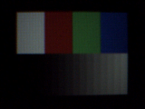 |
5 manual B +32 (0x22 = 0x20)s:0x26=0xa2,s:0x27=0x9e,s:0x21=0x80,s:0x22=0x20,s:0x2e=0x80ok fps=29.8 brilho=21.55 | |
6 manual B -32 (0x22 = 0xa0)s:0x26=0xa2,s:0x27=0x9e,s:0x21=0x80,s:0x22=0xa0,s:0x2e=0x80ok fps=28.8 brilho=21.60 | |
7 manual R +32 (0x2E = 0x20)s:0x26=0xa2,s:0x27=0x9e,s:0x21=0x80,s:0x22=0x80,s:0x2e=0x20ok fps=29.8 brilho=24.97 | 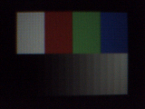 |
8 manual R -32 (0x2E = 0xa0)s:0x26=0xa2,s:0x27=0x9e,s:0x21=0x80,s:0x22=0x80,s:0x2e=0xa0ok fps=29.8 brilho=19.50 | 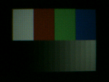 |
9 offset do ADC desligado (COMG bit 3 = 0)s:0x27=0x92ok fps=28.8 brilho=21.34 | |
10 ADC G 0x00 (0x78)s:0x78=0x00ok fps=28.8 brilho=21.94 | |
11 ADC G 0xff (0x78)s:0x78=0xffok fps=29.8 brilho=14.64 | 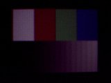 |
12 ADC B 0x00 (0x79)s:0x79=0x00ok fps=29.8 brilho=21.94 | |
13 ADC B 0xff (0x79)s:0x79=0xffok fps=28.8 brilho=21.83 | |
14 ADC R 0x00 (0x7A)s:0x7a=0x00ok fps=29.8 brilho=21.56 | |
15 ADC R 0xff (0x7A)s:0x7a=0xffok fps=28.8 brilho=15.22 | 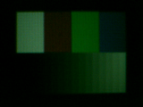 |
16 ADC B 0xff com COMG bit 3 = 0s:0x27=0x92,s:0x79=0xffok fps=29.8 brilho=21.78 | |
17 BRTEN = 0, BRT 0x00s:0x06=0x00ok fps=29.8 brilho=22.25 | |
18 BRTEN = 0, BRT 0xffs:0x06=0xffok fps=29.8 brilho=22.13 | |
19 BRTEN = 1, BRT 0x00s:0x61=0x4a,s:0x06=0x00ok fps=29.8 brilho=2.31 | 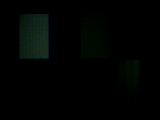 |
20 BRTEN = 1, BRT 0x40s:0x61=0x4a,s:0x06=0x40ok fps=29.8 brilho=7.14 | 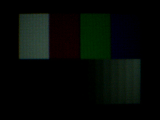 |
21 BRTEN = 1, BRT 0xc0s:0x61=0x4a,s:0x06=0xc0ok fps=29.8 brilho=51.40 | 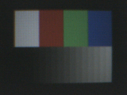 |
22 BRTEN = 1, BRT 0xffs:0x61=0x4a,s:0x06=0xffok fps=29.8 brilho=98.62 | |
23 BRTEN = 1, BRTH = 1, BRT 0xffs:0x61=0x4e,s:0x06=0xffok fps=28.8 brilho=50.75 | 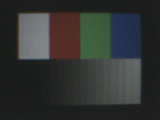 |
24 BRTEN = 1 + offset digital (COMF bit 1), BRT 0xffs:0x61=0x4a,s:0x26=0xa2,s:0x06=0xffok fps=28.8 brilho=98.97 | 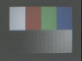 |
25 AEC interno (0x13 bit 0)s:0x13=0x81ok fps=27.8 brilho=29.48 | |
26 AGC interno (0x13 bit 1)s:0x13=0x82ok fps=29.8 brilho=9.18 | |
27 AEC + AGC internoss:0x13=0x83ok fps=26.8 brilho=17.29 | |
28 AEC + AGC, alvo claro (0x24 = 0x60, 0x25 = 0x50)s:0x13=0x83,s:0x24=0x60,s:0x25=0x50ok fps=27.8 brilho=15.07 | 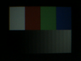 |
29 AEC + AGC, alvo escuro (0x24 = 0x20, 0x25 = 0x90)s:0x13=0x83,s:0x24=0x20,s:0x25=0x90ok fps=27.8 brilho=15.38 | |
30 AEC + AGC, referencia baixa (0x68 = 0x0c)s:0x13=0x83,s:0x68=0x0cok fps=28.8 brilho=9.33 | 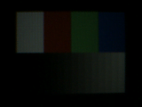 |
31 AEC + AGC, referencia alta (0x68 = 0xec)s:0x13=0x83,s:0x68=0xecok fps=26.8 brilho=17.35 | 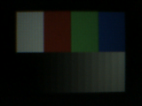 |
32 AEC + AGC, janela central 1/4 (0x29 bit 3)s:0x13=0x83,s:0x29=0x38ok fps=26.8 brilho=17.30 | |
33 AWB desligado (0x12 bit 2 = 0)s:0x12=0x78ok fps=29.8 brilho=23.37 | 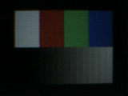 |
34 AWB ligado (= base)s:0x12=0x7cok fps=29.8 brilho=22.35 | |
35 AWB + modo rapido (0x20 bit 1)s:0x12=0x7c,s:0x20=0x42ok fps=29.8 brilho=22.23 | |
36 AWB + ajuste manual no automatico (0x20 bit 2)s:0x12=0x7c,s:0x20=0x44ok fps=29.8 brilho=21.97 | |
37 AWB + modo esperto (0x20 bit 3)s:0x12=0x7c,s:0x20=0x48ok fps=29.8 brilho=22.66 | 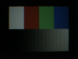 |
38 AWB + passo de 1 bit (0x15 bits 5:4 = 00)s:0x12=0x7c,s:0x15=0x04ok fps=29.8 brilho=22.59 |